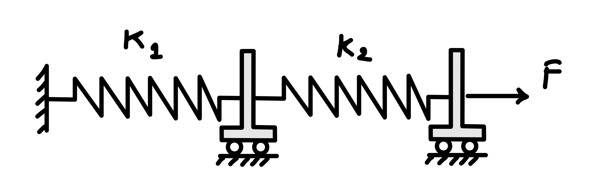
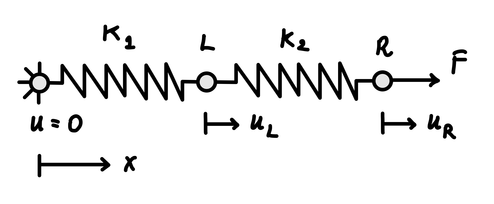
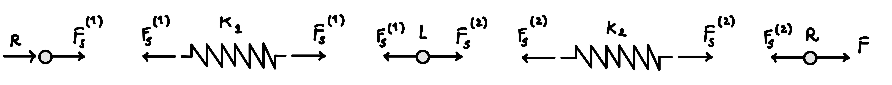
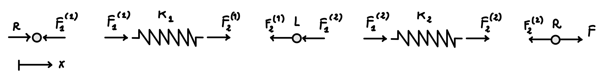
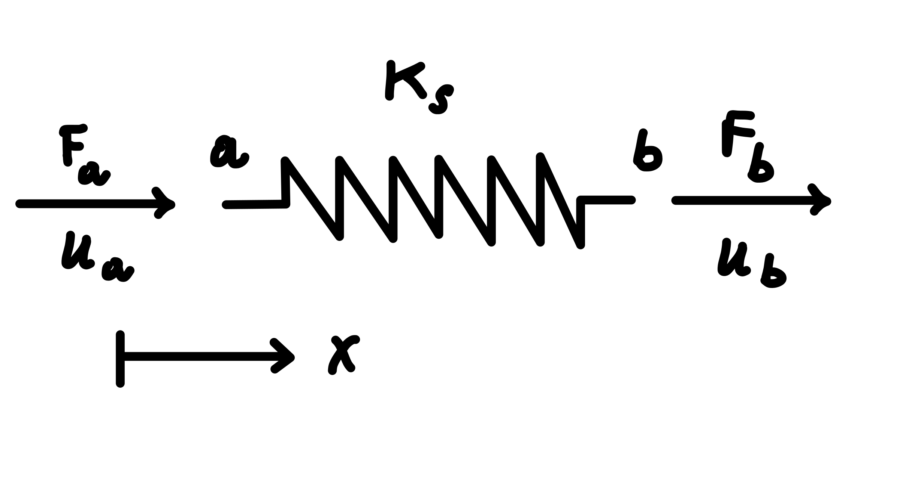
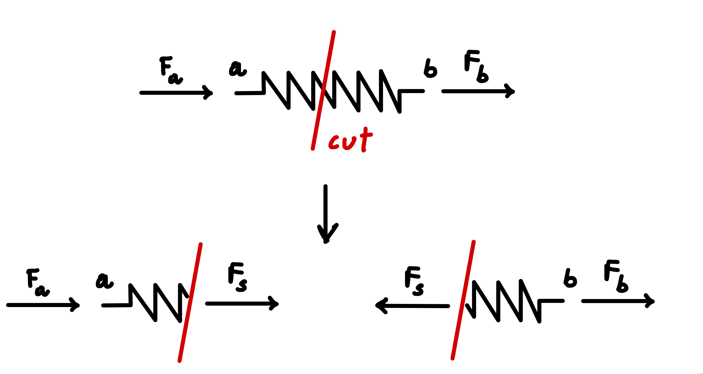
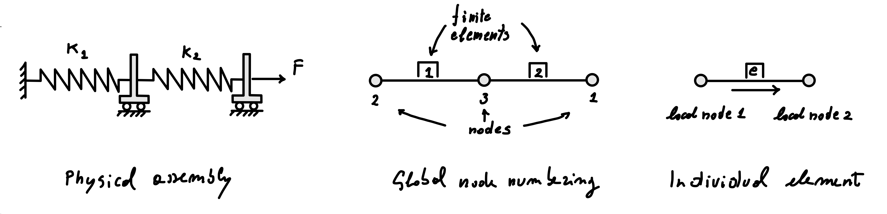
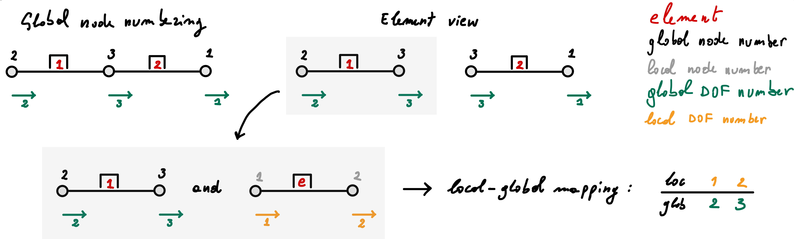

4 Two springs in series: the direct stiffness method
We begin with the physical system shown in Figure 4.1: two carts connected in series by linear springs, with the left end fixed and a force \(F\) applied to the right cart.

To analyze the system, we first construct an idealized mechanical model. The motion is restricted to one dimension, the carts are treated as rigid bodies that can translate only in the \(x\) direction, and the springs are assumed to be massless and linearly elastic. The problem is quasi-static and the carts are frictionless.
In this one-dimensional model, shown in Figure 4.2, the spring end points and their connections to the carts and support are represented by nodes. Each spring connects two nodes and forms an element of the model. The displacement of a node in the \(x\) direction is a degree of freedom. The complete mechanical system can therefore be described by its nodes, spring elements, nodal displacements, applied forces, and displacement constraints.

The objective is to determine the displacements of the two carts. We first solve the problem directly from equilibrium, providing an independent reference solution. We then obtain the same result using the direct stiffness method.
For the numerical example we define
\[ k_1=1\ \mathrm{N/mm}, \qquad k_2=2\ \mathrm{N/mm}, \qquad F=10\ \mathrm{N}. \]
These values are chosen to keep the arithmetic simple while producing displacements that are easy to interpret physically.
4.1 Learning objectives
After completing this chapter, you should be able to:
- derive the stiffness relation for a one-dimensional spring;
- formulate the element stiffness relations and assemble them into the global system using local-to-global degree-of-freedom maps;
- apply displacement boundary conditions and solve for the unknown nodal displacements;
- recover and verify quantities such as spring forces and reactions.
4.2 Solution using equilibrium
4.2.1 Direct equilibrium solution
Before introducing the direct stiffness method, we solve the problem directly from mechanical equilibrium. This provides an independent solution against which the stiffness-method result can later be checked.
For this derivation, let \(u_L\) and \(u_R\) denote the displacements of the left and right carts, respectively. We denote the scalar internal force in spring \(e\) by \(F_s^{(e)}\), where the superscript identifies the spring. A positive value of \(F_s^{(e)}\) denotes tension.
The geometric displacement notation used here is limited to the equilibrium solution; a separate global node numbering is introduced later.

Because the system is in static equilibrium, the net force acting on each cart must be zero.
Consider first the right cart. The applied force \(F\) must be balanced by the force transmitted by spring 2. Therefore,
\[ F_s^{(2)}=F. \]
Equilibrium of the left cart requires the forces transmitted by the two springs to be equal. Hence,
\[ F_s^{(1)}=F_s^{(2)}=F. \]
Both springs therefore carry the same internal force \(F\), as expected for two springs connected in series.
From the spring relation
\[ F_s=k_s\delta, \]
the elongations of the two springs are
\[ \delta_1=\frac{F}{k_1}, \qquad \delta_2=\frac{F}{k_2}. \]
The left end of spring 1 is fixed, so its elongation is equal to the displacement of the left cart:
\[ u_L=\delta_1=\frac{F}{k_1}. \]
The elongation of spring 2 is the relative displacement of its two ends,
\[ \delta_2=u_R-u_L. \]
Therefore,
\[ u_R=u_L+\delta_2 =\frac{F}{k_1}+\frac{F}{k_2}. \]
For the numerical data,
\[ u_L=10\ \mathrm{mm}, \qquad u_R=15\ \mathrm{mm}. \]
Finally, equilibrium of the complete system gives the support reaction
\[ R=-F=-10\ \mathrm{N}. \]
The negative sign indicates that the reaction acts opposite to the positive \(x\) direction.
The numerical values are representative of a small tabletop experiment rather than a structural component.
- A load of \(10\ \mathrm{N}\) is approximately the weight of a \(1\ \mathrm{kg}\) mass under gravity.
- A spring stiffness of \(1\ \mathrm{N/mm}\) means that the spring extends by \(1\ \mathrm{mm}\) for each newton of applied force.
- A spring stiffness of \(2\ \mathrm{N/mm}\) means that the spring extends by \(0.5\ \mathrm{mm}\) for each newton of applied force.
Under the applied load, the two springs in series extend by
\[ u_R=10\left(\frac{1}{1}+\frac{1}{2}\right)=15\ \mathrm{mm}. \]
The right cart therefore moves by \(15\ \mathrm{mm}\), while the extension of the second spring is
\[ u_R-u_L=5\ \mathrm{mm}. \]
These displacements are deliberately large enough to be visible and measurable in a simple laboratory demonstration.
The solution should be checked independently whenever possible.
Dimensional consistency. Because stiffness has units of force divided by length, \(F/k\) has units of displacement.
Equivalent stiffness. For two springs in series,
\[ \frac{1}{k_{\mathrm{eq}}} = \frac{1}{k_1}+\frac{1}{k_2}, \]
so that \(u_R=F/k_{\mathrm{eq}}\).
Limiting cases. If \(k_1\to\infty\), spring 1 becomes rigid and \(u_L\to0\). If \(k_2\to\infty\), spring 2 becomes rigid and both carts move together, with \(u_R=u_L=F/k_1\).
Equivalence to other mechanical elements. For axial deformation, a uniform rod behaves like a linear spring with stiffness \(k_s=EA/L\), and the displacement of a uniform rod fixed at one end and loaded axially by \(F\) at the other is \(FL/EA\). Substituting the spring stiffness
\[ k_s = \frac{EA}{L} \]
into the spring displacement expression,
\[ u = \frac{F}{k_s}, \]
gives
\[ u = \frac{F}{EA/L} = \frac{FL}{EA}, \]
which agrees with the expression of the axial displacement of a uniform rod.
4.2.2 Systematic equilibrium formulation
The equilibrium solution above used the fact that two springs in series carry the same internal force. We now formulate the same mechanical problem in a more systematic way by treating the spring-end forces, the support reaction, and the cart displacements as unknown quantities.
For the complete assembly to be in equilibrium, each spring and each cart must satisfy equilibrium. The support reaction enters as the unknown force applied at the fixed end, while the complete assembly must also satisfy global force balance. At the same time, the two springs are connected through the carts, so all spring ends attached to the same cart must share the same displacement. This enforces kinematic compatibility. Together with the force–displacement relation of each spring, these conditions provide a complete set of algebraic equations for the mechanical system. Rather than solving simultaneously for every force and displacement, we will use this formulation to show how the nodal displacements can be selected as the primary unknowns and the remaining quantities recovered afterwards. The direct stiffness method will then reproduce the same displacement system from the element stiffness relations, connectivity, and equilibrium at the global nodes.
To formulate equilibrium systematically, we now distinguish the forces acting at the two ends of each spring. We denote by \(F_i^{(e)}\) the signed nodal force acting on spring \(e\) at local end \(i\), referred to the positive \(x\) direction. The superscript identifies the spring, whereas the subscript identifies the local spring end. For both springs, local end 1 is the left end and local end 2 is the right end.

At the fixed left end of spring 1, the corresponding nodal force \(F_1^{(1)}\) is the support reaction \(R\).
Spring 1 has end displacements \(0\) and \(u_L\). Its elongation is therefore
\[ \delta_1=u_L, \]
and its internal force is
\[ F_s^{(1)}=k_1u_L. \]
The signed nodal forces associated with its two ends are therefore
\[ R=-F_s^{(1)}=-k_1u_L, \qquad F_2^{(1)}=F_s^{(1)}=k_1u_L. \]
Spring 2 has end displacements \(u_L\) and \(u_R\), so its elongation is
\[ \delta_2=u_R-u_L, \]
and its internal force is
\[ F_s^{(2)}=k_2(u_R-u_L). \]
Equilibrium of the two ends of spring 2 gives
\[ F_1^{(2)}=-F_s^{(2)} =k_2u_L-k_2u_R, \]
and
\[ F_2^{(2)}=F_s^{(2)} =-k_2u_L+k_2u_R. \]
We now impose equilibrium of the carts. By action and reaction, the forces exerted by the springs on the carts are opposite to the corresponding spring-end nodal forces defined above. This implies
for the left cart, \(-F_2^{(1)}-F_1^{(2)}=0, \quad \mathrm{or,\ equivalently,} \quad F_2^{(1)}+F_1^{(2)}=0;\)
for the right cart, \(-F_2^{(2)}+F=0, \quad \mathrm{and\ therefore} \quad F_2^{(2)}=F.\)
The prescribed zero displacement at the fixed support has already been used in the relation for spring 1. Once \(u_L\) has been determined, the support reaction can be recovered from
\[ R=-k_1u_L=-F_2^{(1)}. \]
Equilibrium of the complete assembly also gives
\[ R+F=0. \]
However, this equation is dependent on the others: it follows from the spring relations together with equilibrium of the two carts.
After substituting the two internal-force expressions, the spring-end force relations provide four scalar equations, equilibrium of the two carts provides two more, and equilibrium of the complete assembly provides one. Of these seven scalar relations, one is redundant. We are, therefore, left with six independent equations in the six unknowns
\[ u_L,\qquad u_R,\qquad R,\qquad F_2^{(1)},\qquad F_1^{(2)},\qquad F_2^{(2)}. \]
All six unknowns could be determined simultaneously. However, in a displacement-based formulation we choose the nodal displacements as the primary unknowns. The spring-end forces and the support reaction can then be recovered from the displacements after the solution has been obtained. Eliminating the spring-end forces from the cart-equilibrium equations gives
\[ \begin{bmatrix} k_1+k_2 & -k_2\\ -k_2 & k_2 \end{bmatrix} \begin{bmatrix} u_L\\u_R \end{bmatrix} = \begin{bmatrix} 0\\F \end{bmatrix}. \]
Solving this system yields the same displacements obtained from the direct equilibrium argument above. More importantly, this is the displacement system that the direct stiffness method will reproduce systematically by combining the element stiffness relations according to the model connectivity and enforcing equilibrium at the global nodes.
4.3 Solution using the direct stiffness method
The systematic equilibrium formulation discussed above produced a displacement system by writing the spring relations, enforcing equilibrium, and eliminating the spring-end forces. The direct stiffness method organizes these same mechanical operations into a standard procedure that can be applied systematically to larger assemblies and automated.
The direct stiffness method constructs the global stiffness relation by assembling the contributions of the individual elements according to their connectivity. After the displacement constraints have been accounted for, the equations for the unknown displacement degrees of freedom take the familiar form
\[ \mathbf{K}\mathbf{u}=\mathbf{f}. \]
We begin by deriving the nodal force–displacement relation for a single spring.
4.3.1 Nodal equilibrium relation for a spring
Consider a spring of stiffness \(k_s\) connecting nodes \(a\) and \(b\), as shown in Figure 4.5. The nodal displacements \(u_a\) and \(u_b\) are measured along the \(x\) direction, while \(F_a\) and \(F_b\) denote the corresponding nodal force components acting on the spring, taken as positive in the positive \(x\) direction.

From the previous chapter, the internal spring force is
\[ F_s=k_s(u_b-u_a), \]
where \(F_s>0\) denotes tension.
The nodal-force convention and the internal-force convention describe different signed quantities. The nodal forces \(F_a\) and \(F_b\) act on the spring and are referred to the positive global \(x\) direction, whereas \(F_s>0\) denotes internal tension. The nodal forces required to equilibrate a spring in tension therefore have the pattern \([-F_s,\ F_s]^{\mathsf T}\).
To express equilibrium, cut the spring and consider the two separated parts shown in Figure 4.6.

Equilibrium of the two parts gives
\[ \begin{cases} F_a+F_s=0,\\ -F_s+F_b=0. \end{cases} \]
Substituting \(F_s=k_s(u_b-u_a)\) yields
\[ \begin{cases} k_su_a-k_su_b=F_a,\\ -k_su_a+k_su_b=F_b, \end{cases} \]
which can be written in matrix form as
\[ \underbrace{ k_s \begin{bmatrix} 1 & -1\\ -1 & 1 \end{bmatrix} }_{\mathbf{K}_s} \underbrace{ \begin{bmatrix} u_a\\u_b \end{bmatrix} }_{\mathbf{u}_s} = \underbrace{ \begin{bmatrix} F_a\\F_b \end{bmatrix} }_{\mathbf{f}_s}. \]
Here, \(\mathbf{u}_s\) is the vector of nodal displacements, \(\mathbf{f}_s\) is the vector of nodal forces acting at the ends of the individual spring, and \(\mathbf{K}_s\) is the spring stiffness matrix. These element-end forces should not be confused with the prescribed global load vector of the complete assembly, which is introduced later.
4.3.2 Pre-processing: nodes, elements, and model data
In this example, the mechanical system is already discrete. The pre-processing step therefore consists of describing it in the form required by the direct stiffness method: defining the nodes and elements, their connectivity and properties, and the applied loads and displacement constraints.
We use one spring element for each physical spring and one node at each distinct connection point between the springs, carts, and support. The model therefore contains three nodes and two elements. Node and element labels are identifiers; they do not need to follow the geometric order. To make this independence explicit, use the global node numbering shown in Figure 4.7.

The connectivity of an element specifies how its local nodes are associated with the global nodes of the model. The ordering of the local nodes also defines the local direction of the element, taken here from local node 1 to local node 2. For a two-node spring element, the connectivity therefore consists of the two global node numbers corresponding to local nodes 1 and 2.
With reference to Figure 4.7, the connectivity for this model is summarized in the table below:
| element number | global node corresponding to local node 1 | global node corresponding to local node 2 |
|---|---|---|
| 1 | 2 | 3 |
| 2 | 3 | 1 |
The spring stiffness is supplied directly as an element property. The element stiffness data are
| element number | spring stiffness assigned to the element |
|---|---|
| 1 | \(k_1=1\ \mathrm{N/mm}\) |
| 2 | \(k_2=2\ \mathrm{N/mm}\) |
In general, \(k_e\) denotes the stiffness assigned to element \(e\); for this model, the two values are \(k_1\) and \(k_2\).
The nodal coordinates describe the geometry of the model. Because the spring stiffness \(k_e\) is supplied directly, the nodal coordinates do not enter the element stiffness calculation in this example. They remain useful for describing and plotting the model.
All quantities must be expressed in a consistent system of units. This requirement applies even though the matrices in this example are initially written symbolically and can be solved by hand. In larger systems, numerical values are normally supplied to linear-algebra software, which usually stores matrix entries as numbers without interpreting their physical units. The input values must therefore already belong to one coherent system of units.
Here, forces are expressed in newtons, displacements in millimeters, spring stiffnesses in newtons per millimeter, and strain energy in newton millimeters. With these choices, solving the numerical system returns displacements in millimeters. For the same reason, a bar element with axial stiffness \(EA/L\) would require Young’s modulus \(E\) in newtons per square millimeter, the cross-sectional area \(A\) in square millimeters, and the bar length \(L\) in millimeters.
Alternatively, forces may be expressed in newtons and lengths in meters. In that case, spring stiffnesses must be expressed in newtons per meter, \(E\) in newtons per square meter, \(A\) in square meters, and the computed displacements will be in meters. Any consistent system of units may be used, but all input quantities must be expressed using the same system.
4.3.3 Degrees of freedom and global ordering
A degree of freedom (DOF) is a scalar variable used to describe one component of the possible motion of a node. A node and a degree of freedom are therefore distinct concepts: a node identifies a point in the model, whereas a degree of freedom describes one component of its motion.
In this one-dimensional spring model, each node has one axial displacement degree of freedom. We choose the global degree-of-freedom numbering to coincide with the global node numbering. Thus, node 1 carries degree of freedom 1, node 2 carries degree of freedom 2, and node 3 carries degree of freedom 3.
The global node ordering is summarized below.
| global node number | physical location | global degree-of-freedom number | displacement variable |
|---|---|---|---|
| 1 | right cart | 1 | \(u_1\) |
| 2 | fixed left end | 2 | \(u_2\) |
| 3 | internal cart | 3 | \(u_3\) |
The global displacement vector follows numerical order, not geometric order:
\[ \mathbf{u}= \begin{bmatrix} u_1\\u_2\\u_3 \end{bmatrix}. \]
The connectivity introduced previously maps local nodes to global nodes. For assembly, we also need a local-to-global degree-of-freedom map, which identifies where the local degrees of freedom of each element appear in the global algebraic system.
| element number | global degree of freedom corresponding to local degree of freedom 1 | global degree of freedom corresponding to local degree of freedom 2 |
|---|---|---|
| 1 | 2 | 3 |
| 2 | 3 | 1 |
Because there is exactly one degree of freedom per node and the degree-of-freedom numbering has been chosen to match the node numbering, the degree-of-freedom map contains the same numbers as the connectivity table. The two maps nevertheless represent different information:
- the connectivity maps local nodes to global nodes;
- the degree-of-freedom map maps local element unknowns to positions in the global algebraic system.
A different degree-of-freedom numbering changes the ordering of the global arrays but not the physical solution.
When a node carries more than one degree of freedom, node numbers and degree-of-freedom numbers no longer have a one-to-one numerical correspondence. For example, in two-dimensional elasticity each node typically carries two displacement degrees of freedom, \(u_x\) and \(u_y\).
The local-to-global degree-of-freedom map can also be represented algebraically. For each element, define an element extraction matrix \(\mathbf{C}_e\) such that
\[ \boxed{ \mathbf{u}_e = \mathbf{C}_e\mathbf{u}. } \]
The degree-of-freedom map records which global degree of freedom corresponds to each local degree of freedom. The extraction matrix uses this information to perform the reverse algebraic operation: it extracts the required entries from the global displacement vector and places them in the element’s local ordering.
For element 1, the local-to-global map is
\[ [1,2]_{\mathrm{local}} \longrightarrow [2,3]_{\mathrm{global}}, \]
so
\[ \mathbf{C}_1 = \begin{bmatrix} 0 & 1 & 0\\ 0 & 0 & 1 \end{bmatrix}, \]
and therefore
\[ \mathbf{C}_1\mathbf{u} = \begin{bmatrix} u_2\\ u_3 \end{bmatrix}. \]
For element 2,
\[ [1,2]_{\mathrm{local}} \longrightarrow [3,1]_{\mathrm{global}}, \]
which gives
\[ \mathbf{C}_2 = \begin{bmatrix} 0 & 0 & 1\\ 1 & 0 & 0 \end{bmatrix}, \]
and
\[ \mathbf{C}_2\mathbf{u} = \begin{bmatrix} u_3\\ u_1 \end{bmatrix}. \]
The matrices \(\mathbf{C}_1\) and \(\mathbf{C}_2\) are therefore algebraic representations of the corresponding degree-of-freedom maps. Multiplying a global vector by \(\mathbf{C}_e\) performs the extract operation: the entries required by element \(e\) are selected from the global vector and ordered locally.
4.3.4 Global equilibrium system
There are three global degrees of freedom, so the global displacement and force vectors contain three entries and the global stiffness matrix has size \(3\times3\): \[ \mathbf{K}\in\mathbb{R}^{3\times3}, \qquad \mathbf{u},\mathbf{f}\in\mathbb{R}^{3}. \]
For each spring element \(e\), \[ \mathbf{K}_e = k_e \begin{bmatrix} 1 & -1\\ -1 & 1 \end{bmatrix}. \] Each element relation is written in terms of its two local degrees of freedom. To obtain equilibrium equations for the complete model, the element contributions must be expressed in the global degree-of-freedom ordering.
The local-to-global degree-of-freedom map tells us where the rows and columns of each element stiffness matrix belong in the global matrix. If more than one element contributes to the same global matrix entry, those contributions are added. This process is called assembly.
The assembly process can now be expressed algebraically. Two complementary operations make the local-to-global transfer explicit: extract and scatter.
For element \(e\), the local displacement vector is first extracted from the global displacement vector:
\[ \boxed{ \mathbf{u}_e = \mathbf{C}_e\mathbf{u}. } \]
The element stiffness matrix then acts on this local vector,
\[ \mathbf{K}_e\mathbf{u}_e = \mathbf{K}_e\mathbf{C}_e\mathbf{u}, \]
producing the signed element-end force contributions in the element’s local degree-of-freedom ordering.
These local contributions must next be returned to their corresponding global positions. This operation is called scatter and is performed by the transpose of the extraction matrix:
\[ \boxed{ \mathbf{C}_e^{\mathsf T} \mathbf{K}_e \mathbf{u}_e } = \mathbf{C}_e^{\mathsf T} \mathbf{K}_e \mathbf{C}_e \mathbf{u}. \]
Thus, for each element,
\[ \boxed{ \mathbf{u} \;\xrightarrow{\text{extract }\,\mathbf{C}_e}\; \mathbf{u}_e \;\xrightarrow{\mathbf{K}_e}\; \mathbf{K}_e\mathbf{u}_e \;\xrightarrow{\text{scatter }\,\mathbf{C}_e^{\mathsf T}}\; \mathbf{C}_e^{\mathsf T}\mathbf{K}_e\mathbf{u}_e. } \]
A single scatter operation places one element contribution in the appropriate global positions. Repeating this operation for all elements and adding contributions that map to the same global entries constitutes the assembly of the global system. In computational terms, this repeated placement and accumulation is often described as scatter-add.
For the complete model,
\[ \sum_{e=1}^{n_e} \mathbf{C}_e^{\mathsf T} \mathbf{K}_e \mathbf{C}_e \mathbf{u} = \left( \sum_{e=1}^{n_e} \mathbf{C}_e^{\mathsf T} \mathbf{K}_e \mathbf{C}_e \right) \mathbf{u}. \]
The assembled global stiffness matrix is therefore
\[ \boxed{ \mathbf{K} = \sum_{e=1}^{n_e} \mathbf{C}_e^{\mathsf T} \mathbf{K}_e \mathbf{C}_e. } \]
The vector and matrix forms express the same local-to-global mapping. For a vector contribution, \(\mathbf{C}_e^{\mathsf T}\) scatters the local entries to their global positions. For a matrix contribution, the corresponding operation acts on both the local row and column indices, giving \(\mathbf{C}_e^{\mathsf T}\mathbf{K}_e\mathbf{C}_e\).
The following explicit assembly of the two springs shows, entry by entry, how the degree-of-freedom map and the corresponding scatter operation place and combine the element stiffness contributions in the global matrix.
The assembly operation also has a direct mechanical meaning. When several elements share a global degree of freedom, their signed element-end force contributions are scattered to the same global entry and added. At a free degree of freedom, their assembled value must equal the corresponding applied nodal load. At a constrained degree of freedom, the displacement is prescribed, and the reaction required to satisfy equilibrium is recovered after the displacement solution has been obtained.
4.3.5 Assembly of element 1
For element 1,
\[ \mathbf{K}_1= k_1 \begin{bmatrix} 1 & -1\\ -1 & 1 \end{bmatrix}, \]
and the local-to-global map is
\[ [1,2]_{\mathrm{local}} \longrightarrow [2,3]_{\mathrm{global}}. \]
The four ordered local index pairs
\[ (1,1),\ (1,2),\ (2,1),\ (2,2) \]
map to the global positions
\[ (2,2),\ (2,3),\ (3,2),\ (3,3). \]
Thus,
\[ \mathbf{K}_{\mathrm{from\ element\ 1}}= \begin{bmatrix} 0 & 0 & 0\\ 0 & k_1 & -k_1\\ 0 & -k_1 & k_1 \end{bmatrix}. \]
Equivalently, using the extraction matrix,
\[ \mathbf{K}_{\mathrm{from\ element\ 1}} = \mathbf{C}_1^{\mathsf T} \mathbf{K}_1 \mathbf{C}_1. \]

4.3.6 Assembly of element 2
For element 2,
\[ \mathbf{K}_2= k_2 \begin{bmatrix} 1 & -1\\ -1 & 1 \end{bmatrix}, \]
with
\[ [1,2]_{\mathrm{local}} \longrightarrow [3,1]_{\mathrm{global}}. \]
The four ordered local index pairs map to global positions
\[ (3,3),\ (3,1),\ (1,3),\ (1,1). \]
Therefore,
\[ \mathbf{K}_{\mathrm{from\ element\ 2}}= \begin{bmatrix} k_2 & 0 & -k_2\\ 0 & 0 & 0\\ -k_2 & 0 & k_2 \end{bmatrix}. \]
Equivalently,
\[ \mathbf{K}_{\mathrm{from\ element\ 2}} = \mathbf{C}_2^{\mathsf T} \mathbf{K}_2 \mathbf{C}_2. \]
4.3.7 Assembled stiffness matrix
Adding both element contributions gives
\[ \mathbf{K} = \mathbf{C}_1^{\mathsf T}\mathbf{K}_1\mathbf{C}_1 + \mathbf{C}_2^{\mathsf T}\mathbf{K}_2\mathbf{C}_2, \]
or, explicitly,
\[ \mathbf{K}= \begin{bmatrix} k_2 & 0 & -k_2\\ 0 & k_1 & -k_1\\ -k_2 & -k_1 & k_1+k_2 \end{bmatrix}. \]
The entry \(K_{33}=k_1+k_2\) illustrates the essential assembly operation. Global degree of freedom 3 is shared by both elements, so both spring stiffnesses contribute to the equilibrium equation associated with that degree of freedom.
For \(k_1=1\ \mathrm{N/mm}\) and \(k_2=2\ \mathrm{N/mm}\),
\[ \mathbf{K}= \begin{bmatrix} 2 & 0 & -2\\ 0 & 1 & -1\\ -2 & -1 & 3 \end{bmatrix} \ \mathrm{N/mm}. \]
Several properties can already be checked:
the diagonal entries are positive for this connected spring assembly;
the matrix is symmetric: \(K_{ij}=K_{ji}\);
\(K_{12}=K_{21}=0\) because global degrees of freedom 1 and 2 do not belong to the same element;
rigid translation is a null mode because \[ \mathbf{K} \begin{bmatrix} 1\\ 1\\ 1 \end{bmatrix} = \mathbf{0}, \]
meaning that assigning the same displacement to every node corresponds to a rigid translation of the assembly and therefore does not deform either spring or generate internal forces; equivalently, each row of \(\mathbf{K}\) sums to zero;
the matrix is singular before a displacement constraint is applied because the unconstrained assembly can translate without deforming either spring;
for larger problems with local connectivity, the global matrix is sparse, meaning that many entries are zero.
4.3.8 External forces, displacement constraint, and reaction
The vector of known applied nodal loads is
\[ \mathbf{f}_{\mathrm{app}}= \begin{bmatrix} F\\0\\0 \end{bmatrix}. \]
Because \(F\) is already prescribed as a nodal load of the global model, no element load vector needs to be constructed or assembled in this example.
The fixed left end imposes
\[ u_2=0. \]
The support reaction is unknown before the solution and is represented by
\[ \mathbf{r}= \begin{bmatrix} 0\\ R\\ 0 \end{bmatrix}. \]
The complete nodal equilibrium relation is therefore
\[ \mathbf{K}\mathbf{u} = \mathbf{f}_{\mathrm{app}}+\mathbf{r}. \]
Only the known applied load vector is used when solving for the unknown displacements at the free degrees of freedom. The reaction is recovered afterward from the original assembled system.
A prescribed displacement is an essential, or Dirichlet, boundary condition. In a continuum problem, a prescribed traction is a natural, or Neumann, boundary condition. In the present discrete spring model, the corresponding quantity is a prescribed nodal force.
In this discrete spring model, \(u_2=0\) is a homogeneous displacement boundary condition and \(F\) is a prescribed nodal load. The support reaction \(R\) is not a prescribed load; it is an output recovered after the displacement solution has been computed.
4.3.9 Imposing the homogeneous displacement condition
The displacement condition must be imposed before the linear system is solved. Two standard algebraic approaches are useful for this example.
4.3.9.1 Approach 1: eliminate the constrained row and column
Deleting row 2 and column 2 yields the reduced system
\[ \begin{bmatrix} k_2 & -k_2\\ -k_2 & k_1+k_2 \end{bmatrix} \begin{bmatrix} u_1\\u_3 \end{bmatrix} = \begin{bmatrix} F\\0 \end{bmatrix}. \]
This reduced system is the same displacement system obtained earlier from the systematic equilibrium formulation. The apparent difference is only due to the global degree-of-freedom ordering.
In the present numbering,
\[ u_1=u_R, \qquad u_3=u_L. \]
The reduced global vector is therefore ordered as \([u_R,\ u_L]^{\mathsf T}\), whereas the equilibrium formulation used the geometric ordering \([u_L,\ u_R]^{\mathsf T}\).
Reordering the equations and unknowns into the geometric order used in the classical equilibrium formulation gives
\[ \begin{bmatrix} k_1+k_2 & -k_2\\ -k_2 & k_2 \end{bmatrix} \begin{bmatrix} u_3\\ u_1 \end{bmatrix} = \begin{bmatrix} 0\\ F \end{bmatrix}, \]
which is exactly the displacement system obtained previously from classical equilibrium.
The direct stiffness method has therefore reproduced the same mechanical equations through element formulation, connectivity, assembly, and the application of the displacement constraint.
This approach reduces the size of the linear system. The prescribed value \(u_2=0\) is inserted into the complete displacement vector after the reduced system has been solved.
4.3.9.2 Approach 2: modify the full system
Alternatively, zero row 2 and column 2, place one on the corresponding diagonal entry, and set the corresponding right-hand-side entry to zero. Denoting the modified arrays by \(\widetilde{\mathbf{K}}\) and \(\widetilde{\mathbf{f}}\) gives
\[ \underbrace{ \begin{bmatrix} k_2 & 0 & -k_2\\ 0 & 1 & 0\\ -k_2 & 0 & k_1+k_2 \end{bmatrix} }_{\widetilde{\mathbf{K}}} \begin{bmatrix} u_1\\u_2\\u_3 \end{bmatrix} = \underbrace{ \begin{bmatrix} F\\0\\0 \end{bmatrix} }_{\widetilde{\mathbf{f}}}. \]
The second equation is exactly \(u_2=0\). This approach preserves the full vector size and is simple to implement for homogeneous prescribed displacements. The modified matrix is an algebraic system matrix, not the original physical stiffness matrix; the replaced row represents the displacement equation rather than nodal force equilibrium.
For this small example the replacement by one is harmless. In larger problems, the scale of the replacement can affect numerical conditioning, so elimination or a suitably scaled modification is normally preferred.
The form shown here applies to a prescribed displacement equal to zero. A nonzero prescribed displacement requires a consistent correction of the right-hand side before the row and column are modified. That general case is introduced later.
4.3.10 Solution
Both approaches give
\[ u_1=F\left(\frac{1}{k_1}+\frac{1}{k_2}\right), \qquad u_2=0, \qquad u_3=\frac{F}{k_1}. \]
Therefore,
\[ \mathbf{u}= \begin{bmatrix} F\left(\dfrac{1}{k_1}+\dfrac{1}{k_2}\right)\\[4pt] 0\\[4pt] \dfrac{F}{k_1} \end{bmatrix}. \]
Substituting the numerical values of the parameters gives
\[ \mathbf{u}= \begin{bmatrix} 15\\0\\10 \end{bmatrix} \ \mathrm{mm}. \]
Because of the deliberately non-geometric numbering, this means:
- right cart: \(u_1=15\ \mathrm{mm}\);
- fixed left end: \(u_2=0\);
- internal cart: \(u_3=10\ \mathrm{mm}\).
The values are identical to those obtained from direct equilibrium: \(u_L=u_3=10\ \mathrm{mm}\) and \(u_R=u_1=15\ \mathrm{mm}\).
4.3.11 Post-processing and verification
Post-processing consists of operations performed after the displacement vector has been computed. Here we recover spring elongations, internal forces, the support reaction, and strain energy.
4.3.11.1 Spring elongations and internal forces
The elongations follow from the element local-to-global maps:
\[ \delta_1=u_3-u_2=10\ \mathrm{mm}, \qquad \delta_2=u_1-u_3=5\ \mathrm{mm}. \]
The corresponding internal spring forces are
\[ F_s^{(1)}=k_1\delta_1=10\ \mathrm{N}, \qquad F_s^{(2)}=k_2\delta_2=10\ \mathrm{N}. \]
Both springs carry the applied force, as required by equilibrium.
4.3.11.2 Support reaction
Let \(\mathbf{K}_{\mathrm{original}}\) denote the assembled stiffness matrix before the displacement boundary condition is imposed. Using the original assembled stiffness matrix and the original applied load vector,
\[ \mathbf{r} = \mathbf{K}_{\mathrm{original}}\mathbf{u} - \mathbf{f}_{\mathrm{app}} = \begin{bmatrix} 0\\-10\\0 \end{bmatrix} \ \mathrm{N}. \]
The support reaction is \(R=-10\ \mathrm{N}\).
4.3.11.3 Internal strain energy
For a linear elastic system,
\[ U=\frac{1}{2} \mathbf{u}^{\mathsf T} \mathbf{K}_{\mathrm{original}} \mathbf{u}. \]
The same energy can be computed element by element:
\[ U= \sum_{e=1}^{n_e} \frac{1}{2}k_e\delta_e^2. \]
For the two springs,
\[ U= \frac{1}{2}k_1\delta_1^2 + \frac{1}{2}k_2\delta_2^2 =75\ \mathrm{N\,mm}. \]
Since both springs carry the same internal force \(F\), their elongations are
\[ \delta_1=\frac{F}{k_1}, \qquad \delta_2=\frac{F}{k_2}. \]
Substituting these expressions into the element-wise strain-energy relation
\[ U= \frac{1}{2}k_1\delta_1^2 + \frac{1}{2}k_2\delta_2^2 \]
gives
\[ \begin{aligned} U &= \frac{1}{2}k_1 \left(\frac{F}{k_1}\right)^2 + \frac{1}{2}k_2 \left(\frac{F}{k_2}\right)^2 \\ &= \frac{1}{2}F^2 \left( \frac{1}{k_1} + \frac{1}{k_2} \right). \end{aligned} \]
This is the same strain energy written in terms of the applied force and the two spring stiffnesses.
Since the total displacement of the right cart is
\[ u_R= F\left( \frac{1}{k_1}+\frac{1}{k_2} \right), \]
the strain energy can also be written as
\[ U=\frac{1}{2}Fu_R. \]
Substituting the numerical values of the parameters gives
\[ U = \frac{1}{2}(10)(15) = 75\ \mathrm{N\,mm}. \]
4.3.11.4 Verification summary
The result has been checked in several independent ways:
- dimensional consistency: \(F/k\) has units of displacement;
- agreement with the direct equilibrium solution;
- equal internal force in both springs;
- global force balance through the recovered reaction;
- agreement among global, element, and external-work strain-energy expressions.
Renumber the three global nodes in geometric order. Reconstruct the connectivity table, global displacement vector, load vector, and stiffness matrix. Which algebraic quantities change, and which physical results remain unchanged?
4.4 Automation: from formulation to implementation
The direct stiffness calculation can now be automated. In general, a finite element program must perform the following stages:
- represent the model data, including elements, connectivity, loads, and constraints;
- use the local-to-global degree-of-freedom map to extract the quantities required by each element and evaluate its contribution;
- assemble the element contributions into the global algebraic system by scattering them to their global positions and adding overlapping contributions;
- impose the prescribed boundary conditions;
- solve for the unknown degrees of freedom;
- post-process the solution to obtain relevant mechanical quantities;
- verify the numerical results using independent checks.
The next chapter translates this procedure into Julia code for the two-spring assembly, using the mechanical formulation developed here.